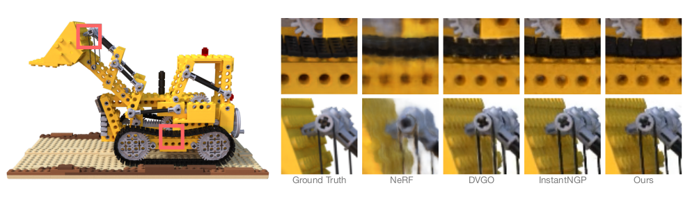
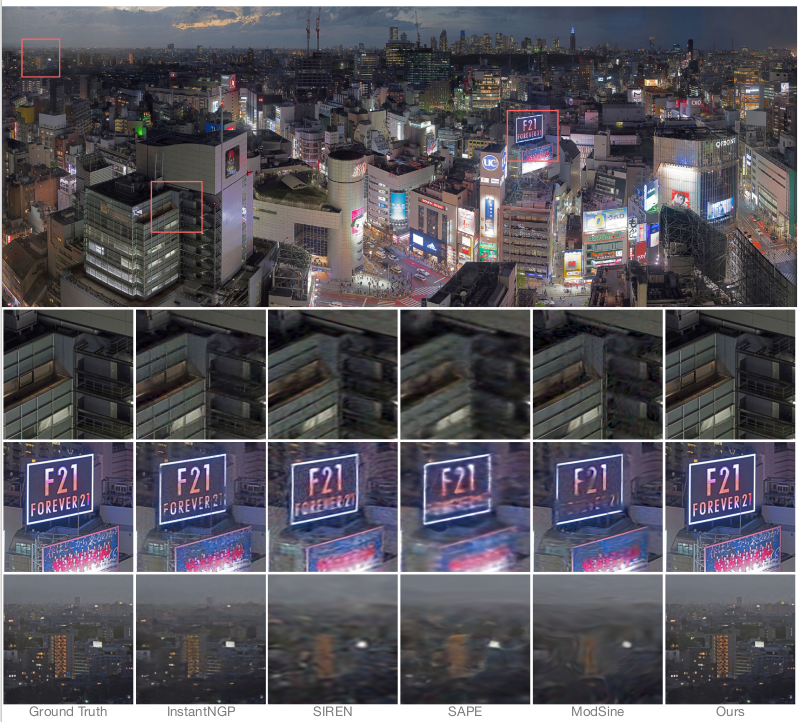

基于Fourier分析的神经隐式表达
本系统实现了一个基于Fourier分析理论的神经隐式表达方法，专门用于新视角图像合成任务。传统方法如多分辨率hash grid编码虽然有效，但存在特征空间与解码器空间之间缺乏协调、不同分辨率层级之间耦合严重等问题。本研究引入Fourier分析理论来改善特征解耦与分辨率协调问题，通过将网格特征转换为具有时频特性的多尺度Fourier特征，并将解码器函数空间表示为多个正交子空间的线性组合，实现了更高效的神经表示学习。该方法在保持甚至提升精度的同时，模型更小、更快、更高效，在Synthetic-NeRF、Tanks & Temples、BlendedMVS三个数据集上的实验结果验证了方法的有效性。
作者：李齐彪，中国科学技术大学
方法介绍
研究背景
神经表示广泛应用于图像、3D几何、辐射场等数字信号建模领域，如NeRF、NeuS等经典方法。传统方法如多分辨率hash grid编码（例如Instant-NGP）虽然在性能上表现优异，但仍存在一些关键问题：特征空间与解码器空间之间缺乏有效协调机制，不同分辨率层级之间存在严重的耦合问题，这些问题限制了模型的表达能力和训练效率。为了解决这些挑战，本文尝试引入Fourier分析理论来改善特征解耦与分辨率协调问题。
主要贡献
- 理论分析：深入分析了grid编码空间和解码函数空间，建立了Fourier正交分解在神经表示中的数学基础，为后续方法设计提供了理论支撑。
- Fourier编码：提出了将网格特征转换为具有时频特性的多尺度Fourier特征的方法，显著增强了不同特征之间的解耦能力。
- Fourier分解框架：设计了将解码器函数空间表示为多个正交子空间线性组合的框架，每个子空间对应一个特定频率的Fourier基，采用受Gram-Schmidt正交化启发的结构化信号流进行逐层构建。
技术方法
整个方法包含三个核心组件：编码模块使用多分辨率哈希网格编码，将空间位置映射为特征向量；正交分解模块将解码函数空间（Hilbert空间）分解为多个Fourier正交子空间；投影与重构模块中每个子空间的基函数由Fourier网络建模，最终输出为这些子空间的加权组合。这种设计使得模型能够更好地处理不同频率成分的信息，实现更精确的场景重建。
环境配置
快速环境配置：
bash setup_env.sh
该脚本将自动安装所有必需的依赖包和配置环境。
快速开始
新视角图像合成
新视角图像合成是本方法的主要应用场景，通过训练神经辐射场模型来实现从有限视角图像生成任意新视角的高质量图像。

新视角图像合成流程示意图，展示了从输入多视角图像到生成新视角图像的完整过程。
训练命令：
python train_nerf.py --root_dir <path/to/lego> --exp_name Trunk --num_epochs 30 --lr 2e-2 --eval_lpips --no_save_test --exp_root_dir experiment/
参数说明：
• --no_save_test 表示不保存测试合成图像
• --eval_lpips 启用LPIPS感知距离指标评估
• --exp_root_dir experiment/ 设置实验结果保存路径
• --exp_name Trunk 设置实验名称，模型和日志将保存在experiment/Trunk/目录中
合成数据实例
更多详细数据请查看 ./experiments/Truck 目录
图像压缩任务
除了新视角合成，本方法还可以应用于图像压缩任务，通过神经隐式表达来实现高效的图像编码和重建。

2D图像拟合与压缩效果展示，显示了方法在图像压缩任务上的优异性能。
图像压缩命令：
python train_img.py --config <path/to/config.json> --input_path <path/to/image>
该命令将根据配置文件对指定图像进行神经隐式表达训练，实现高质量的图像压缩。
数据集准备
本系统支持用户自定义数据集，数据集格式参考Facebook Research NSVF数据集标准。以下是详细的数据集结构说明和准备步骤。
数据集结构
<dataset_name>
│-- bbox.txt # 包含边界框和初始体素尺寸的文件
│-- intrinsics.txt # 4x4 相机内参矩阵
│
├── rgb/ # 每一视角对应的图像文件夹
│ ├── 0.png # 第0视角图像
│ ├── 1.png # 第1视角图像
│ └── ...
│
├── pose/ # 每一视角对应的相机位姿 (4x4矩阵)
│ ├── 0.txt # 第0视角的相机姿态
│ ├── 1.txt # 第1视角的相机姿态
│ └── ...
│
└── [可选 test_traj.txt] # 用于自由视角渲染展示的相机轨迹（4N x 4矩阵）
bbox.txt 文件格式
该文件仅包含一行，描述了空间边界框与初始体素大小：
x_min y_min z_min x_max y_max z_max initial_voxel_size
例如：
-1.0 -1.0 -1.0 1.0 1.0 1.0 0.01
重要说明
- 图像（rgb/*.png）和相机姿态文件（pose/*.txt）的文件名不必完全一致，但在按字符串排序后，两者的顺序必须一一对应。
- 数据划分示例：train（第0到99视角）、valid（第100到199视角）、test（第200到399视角），可根据任务需要调整。
- 若包含test_traj.txt，将用于可视化自由视角路径渲染。
- 所有4x4矩阵建议使用空格分隔，并以行主序存储。
- 建议图像尺寸统一以避免训练时的兼容问题。